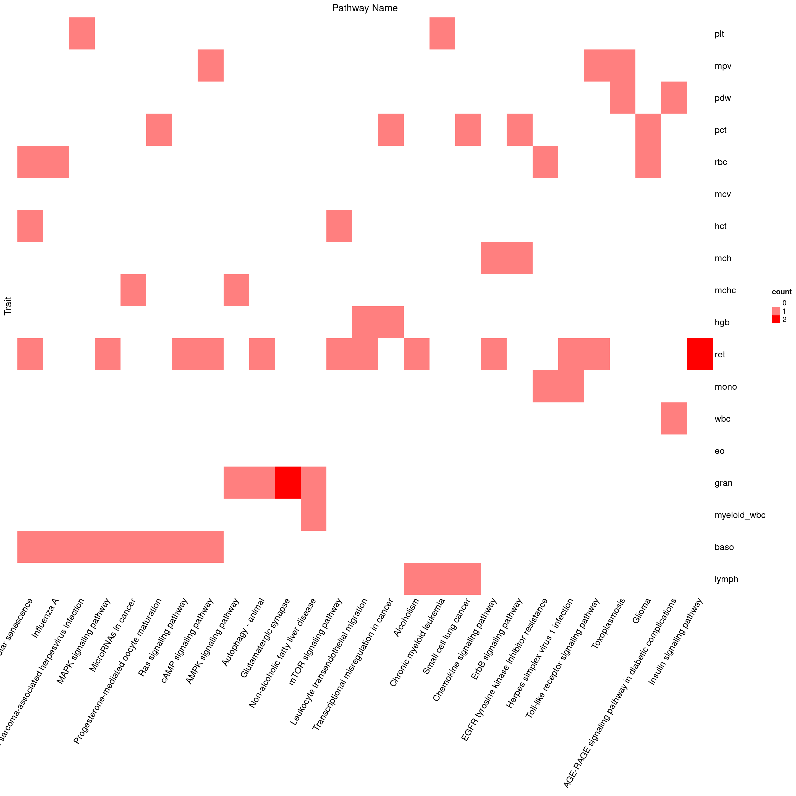
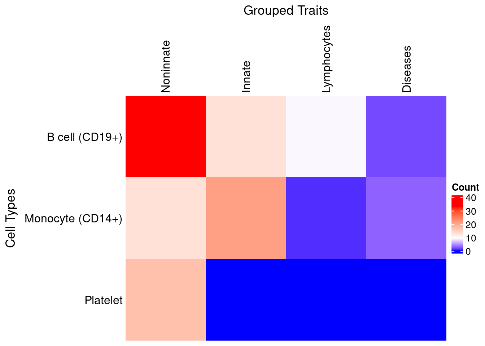
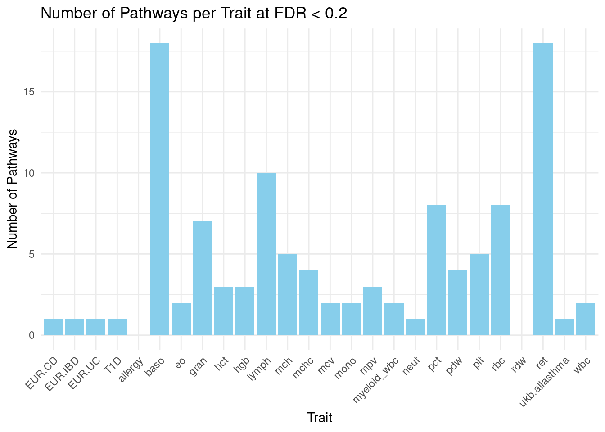
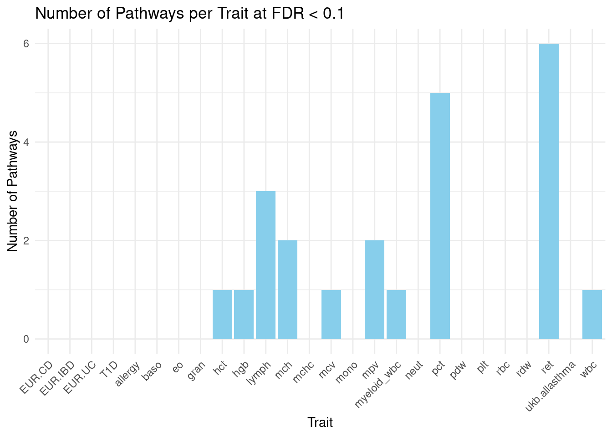
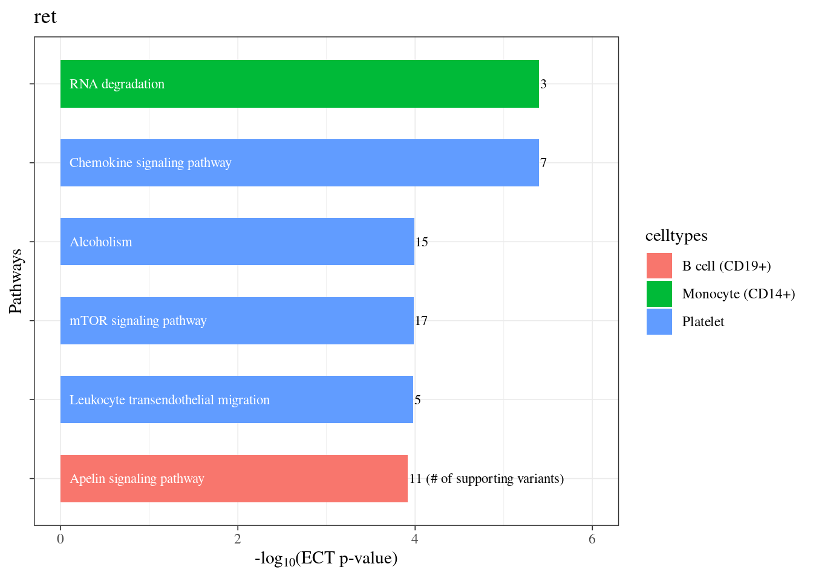

ECT result analyzing
XSun
2024-02-22
Last updated: 2024-03-05
Checks: 7 0
Knit directory: factor_analysis_new/
This reproducible R Markdown analysis was created with workflowr (version 1.7.0). The Checks tab describes the reproducibility checks that were applied when the results were created. The Past versions tab lists the development history.
Great! Since the R Markdown file has been committed to the Git repository, you know the exact version of the code that produced these results.
Great job! The global environment was empty. Objects defined in the global environment can affect the analysis in your R Markdown file in unknown ways. For reproduciblity it’s best to always run the code in an empty environment.
The command set.seed(20221201) was run prior to running
the code in the R Markdown file. Setting a seed ensures that any results
that rely on randomness, e.g. subsampling or permutations, are
reproducible.
Great job! Recording the operating system, R version, and package versions is critical for reproducibility.
Nice! There were no cached chunks for this analysis, so you can be confident that you successfully produced the results during this run.
Great job! Using relative paths to the files within your workflowr project makes it easier to run your code on other machines.
Great! You are using Git for version control. Tracking code development and connecting the code version to the results is critical for reproducibility.
The results in this page were generated with repository version 577b5d8. See the Past versions tab to see a history of the changes made to the R Markdown and HTML files.
Note that you need to be careful to ensure that all relevant files for
the analysis have been committed to Git prior to generating the results
(you can use wflow_publish or
wflow_git_commit). workflowr only checks the R Markdown
file, but you know if there are other scripts or data files that it
depends on. Below is the status of the Git repository when the results
were generated:
working directory clean
Note that any generated files, e.g. HTML, png, CSS, etc., are not included in this status report because it is ok for generated content to have uncommitted changes.
These are the previous versions of the repository in which changes were
made to the R Markdown (analysis/rerun_ECT_analy.Rmd) and
HTML (docs/rerun_ECT_analy.html) files. If you’ve
configured a remote Git repository (see ?wflow_git_remote),
click on the hyperlinks in the table below to view the files as they
were in that past version.
| File | Version | Author | Date | Message |
|---|---|---|---|---|
| Rmd | 577b5d8 | XSun | 2024-03-04 | update |
| html | 577b5d8 | XSun | 2024-03-04 | update |
| Rmd | 0a6fbdd | XSun | 2024-02-26 | update |
| html | 0a6fbdd | XSun | 2024-02-26 | update |
Functions used
library(tibble)
library(dplyr)
library(ggplot2)
library(tidyverse)
library(ComplexHeatmap)
library(circlize)
traits <- c("eo", "gran", "hct", "hgb", "lymph", "mch", "mchc", "mcv",
"mpv", "mono", "myeloid_wbc", "neut", "plt", "pdw", "pct",
"rbc", "rdw", "ret", "wbc", "baso", "T1D", "ukb.allasthma",
"EUR.IBD", "EUR.CD", "EUR.UC", "allergy")
celltypes <- c("B_cell","CD14_positive_monocyte","CD15_positive_leukocyte","platelet","T_cell","thymocyte")
type <- c("B cell (CD19+)","Monocyte (CD14+)","Leukocyte (CD15+)","Platelet","T cell (CD4+)","T cell (CD8+)")
plot_selected_pwys <- function(trait, summary_df) {
# Subset summary_df for the given trait
selected <- summary_df[summary_df$trait == trait, ]
# Handle duplicated pathway names by appending a space
index <- which(duplicated(selected$pwy_name))
selected$pwy_name[index] <- paste0(selected$pwy_name[index], " ")
# Transform p-values and order by -log10(pval)
selected$lgectpval <- -log10(selected$pval_ECT)
selected <- selected[order(selected$lgectpval, decreasing = TRUE), ]
# Append note to the last num_snp_pass_cutoff value
selected$num_snp_pass_cutoff[nrow(selected)] <- paste0(selected$num_snp_pass_cutoff[nrow(selected)], " (# of supporting variants)")
# Set pathway names as a factor with levels in the desired order
selected$pwy_name <- factor(selected$pwy_name, levels = rev(unique(selected$pwy_name)))
# Create the plot
p <- ggplot(selected) +
theme_bw(base_line_size = 0.3) +
geom_col(aes(x = lgectpval, y = pwy_name, fill = celltypes), width = 0.6) +
geom_text(aes(0, y = pwy_name, label = pwy_name), hjust = 0, nudge_x = 0.1, colour = "white", size = 3, family = "Times") +
geom_text(aes(lgectpval, y = pwy_name, label = num_snp_pass_cutoff), hjust = 0, nudge_x = 0.01, colour = "black", size = 3, family = "Times") +
labs(x = expression(paste("-log"[10], "(ECT p-value)")), y = "Pathways") +
theme(axis.text.y = element_blank(), text = element_text(family = "Times")) +
xlim(0, ceiling(max(selected$lgectpval))) +
ggtitle(trait)
return(p)
}
plot_selected_traits <- function(pwy, summary_df) {
# Subset summary_df for the given trait
selected <- summary_df[summary_df$pwy_name == pwy, ]
# Handle duplicated trait names by appending a space
index <- which(duplicated(selected$trait))
selected$trait[index] <- paste0(selected$trait[index], " ")
# Transform p-values and order by -log10(pval)
selected$lgectpval <- -log10(selected$pval_ECT)
selected <- selected[order(selected$lgectpval, decreasing = TRUE), ]
# Append note to the last num_snp_pass_cutoff value
selected$num_snp_pass_cutoff[nrow(selected)] <- paste0(selected$num_snp_pass_cutoff[nrow(selected)], " (# of supporting variants)")
# Set pathway names as a factor with levels in the desired order
selected$trait <- factor(selected$trait, levels = rev(unique(selected$trait)))
# Create the plot
p <- ggplot(selected) +
theme_bw(base_line_size = 0.3) +
geom_col(aes(x = lgectpval, y = trait, fill = celltypes), width = 0.6) +
geom_text(aes(0, y = trait, label = trait), hjust = 0, nudge_x = 0.1, colour = "white", size = 3, family = "Times") +
geom_text(aes(lgectpval, y = trait, label = num_snp_pass_cutoff), hjust = 0, nudge_x = 0.01, colour = "black", size = 3, family = "Times") +
labs(x = expression(paste("-log"[10], "(ECT p-value)")), y = "Traits") +
theme(axis.text.y = element_blank(), text = element_text(family = "Times")) +
xlim(0, ceiling(max(selected$lgectpval))) +
ggtitle(pwy)
return(p)
}
generate_heatmap <- function(df_all) {
# Count the number of occurrences for each trait-pwy_name pair
count_data <- df_all %>%
dplyr::group_by(trait, pwy_name) %>%
dplyr::summarise(n = n(), .groups = 'drop')
# Create a matrix for the heatmap
heatmap_data <- count_data %>%
tidyr::pivot_wider(names_from = pwy_name, values_from = n, values_fill = list(n = 0)) %>%
column_to_rownames(var = "trait") %>%
as.matrix()
# Determine the range of integer values
value_range <- range(heatmap_data, na.rm = TRUE)
value_range <- c(floor(value_range[1]), ceiling(value_range[2])) # Ensure they are integers
# Create a sequence of integers within this range
int_seq <- seq(value_range[1], value_range[2], by = 1)
colors <- colorRampPalette(c("white", "red"))(length(int_seq))
# Create a named vector where each integer is associated with a specific color
color_mapping <- setNames(colors, int_seq)
# Generate the heatmap with the specified color mapping
ComplexHeatmap::Heatmap(heatmap_data, name = "count",
column_title = "Pathway Name", row_title = "Trait",
col = color_mapping, # Use the discrete color mapping
border = FALSE,
show_row_dend = FALSE,
show_column_dend = FALSE)
}Pathways & traits heat map
ECT FDR < 0.2
load("/project/xinhe/xsun/pathway_factor/analysis/1.ECT/results/ECT_summary_mbeadded_ectfdr02_allcelltypes.rdata")
generate_heatmap(df_all = df_all)

Pathways identified across Traits at various cutoffs
ECT FDR < 0.2
load("/project/xinhe/xsun/pathway_factor/analysis/1.ECT/results/ECT_summary_mbeadded_ectfdr02_allcelltypes.rdata")
num_pwy_pertrait <- lapply(traits,function(trait) {
sum(!duplicated(df_all$factor[df_all$trait == trait]))
})
num_pwy_pertrait <- unlist(num_pwy_pertrait)
names(num_pwy_pertrait) <- traits
data_long <- enframe(num_pwy_pertrait, name = "trait", value = "count")
# Plot
ggplot(data_long, aes(x = trait, y = count)) +
geom_bar(stat = "identity", fill = "skyblue") +
theme_minimal() +
labs(title = "Number of Pathways per Trait at FDR < 0.2",
x = "Trait",
y = "Number of Pathways") +
theme(axis.text.x = element_text(angle = 45, hjust = 1))
plot_selected_pwys(trait = "baso",summary_df = df_all)
plot_selected_pwys(trait = "ret",summary_df = df_all)
plot_selected_pwys(trait = "lymph",summary_df = df_all)
| Version | Author | Date |
|---|---|---|
| 577b5d8 | XSun | 2024-03-04 |
ECT FDR < 0.1
load("/project/xinhe/xsun/pathway_factor/analysis/1.ECT/results/ECT_summary_mbeadded_ectfdr02_allcelltypes.rdata")
df_all <- df_all[df_all$fdr_ECT < 0.1,]
num_pwy_pertrait <- lapply(traits,function(trait) {
sum(!duplicated(df_all$factor[df_all$trait == trait]))
})
num_pwy_pertrait <- unlist(num_pwy_pertrait)
names(num_pwy_pertrait) <- traits
data_long <- enframe(num_pwy_pertrait, name = "trait", value = "count")
# Plot
ggplot(data_long, aes(x = trait, y = count)) +
geom_bar(stat = "identity", fill = "skyblue") +
theme_minimal() +
labs(title = "Number of Pathways per Trait at FDR < 0.1",
x = "Trait",
y = "Number of Pathways") +
theme(axis.text.x = element_text(angle = 45, hjust = 1))
plot_selected_pwys(trait = "ret",summary_df = df_all)
plot_selected_pwys(trait = "pct",summary_df = df_all)
| Version | Author | Date |
|---|---|---|
| 577b5d8 | XSun | 2024-03-04 |
plot_selected_pwys(trait = "lymph",summary_df = df_all)
| Version | Author | Date |
|---|---|---|
| 577b5d8 | XSun | 2024-03-04 |
Pathways involved in multiplt traits
ECT FDR < 0.2
load("/project/xinhe/xsun/pathway_factor/analysis/1.ECT/results/ECT_summary_mbeadded_ectfdr02_allcelltypes.rdata")
pwys <- df_all$pwy_code[!duplicated(df_all$pwy_code)]
num_trait_perpwy <- lapply(pwys,function(pwy) {
sum(!duplicated(df_all$trait[df_all$pwy_code == pwy]))
})
num_trait_perpwy <- unlist(num_trait_perpwy)
names(num_trait_perpwy) <- df_all$pwy_name[match(pwys, df_all$pwy_code)]
num_trait_perpwy <- num_trait_perpwy[num_trait_perpwy>1]
data_long <- enframe(num_trait_perpwy, name = "pwy", value = "count")
# Plot
ggplot(data_long, aes(x = pwy, y = count)) +
geom_bar(stat = "identity", fill = "skyblue") +
theme_minimal() +
labs(title = "Number of Traits per pwy at FDR < 0.1",
x = "pwy",
y = "Number of Traits") +
theme(axis.text.x = element_text(angle = 45, hjust = 1))
| Version | Author | Date |
|---|---|---|
| 577b5d8 | XSun | 2024-03-04 |
plot_selected_traits("Cellular senescence",df_all)
| Version | Author | Date |
|---|---|---|
| 577b5d8 | XSun | 2024-03-04 |
plot_selected_traits("cAMP signaling pathway",df_all)
| Version | Author | Date |
|---|---|---|
| 577b5d8 | XSun | 2024-03-04 |
ECT FDR < 0.1
load("/project/xinhe/xsun/pathway_factor/analysis/1.ECT/results/ECT_summary_mbeadded_ectfdr02_allcelltypes.rdata")
df_all <- df_all[df_all$fdr_ECT < 0.1,]
pwys <- df_all$pwy_code[!duplicated(df_all$pwy_code)]
num_trait_perpwy <- lapply(pwys,function(pwy) {
sum(!duplicated(df_all$trait[df_all$pwy_code == pwy]))
})
num_trait_perpwy <- unlist(num_trait_perpwy)
names(num_trait_perpwy) <- df_all$pwy_name[match(pwys, df_all$pwy_code)]
num_trait_perpwy <- num_trait_perpwy[num_trait_perpwy>1]
data_long <- enframe(num_trait_perpwy, name = "pwy", value = "count")
# Plot
ggplot(data_long, aes(x = pwy, y = count)) +
geom_bar(stat = "identity", fill = "skyblue") +
theme_minimal() +
labs(title = "Number of Traits per pwy at FDR < 0.1",
x = "pwy",
y = "Number of Traits") +
theme(axis.text.x = element_text(angle = 45, hjust = 1))
| Version | Author | Date |
|---|---|---|
| 577b5d8 | XSun | 2024-03-04 |
plot_selected_traits("Small cell lung cancer",df_all)
| Version | Author | Date |
|---|---|---|
| 577b5d8 | XSun | 2024-03-04 |
Genes close to supporting variants – for pairs with ECT FDR < 0.1
load("/project/xinhe/xsun/pathway_factor/analysis/3.results_analysis/results/nearby_gene_added.rdata")
df <- df_all[,c("celltypes","factor","trait","pwy_name","fdr_ECT","num_snp_pass_cutoff","gene_near_supp_snps")]
colnames(df) <- c("celltypes","factor","trait","pwy_name","fdr_ECT","#of supporting SNPs","gene near supporting SNPs")
DT::datatable(df)If the supporting SNPs are trans-eqtls reported in eQTLGen
Using top 10 genes with largest abs(gene loadings) and the supporting SNPs, we have 7960 gene ~ SNP pairs. 17 of them were reported by eQTLGen
load("/project/xinhe/xsun/pathway_factor/analysis/3.results_analysis/results/trans_pairs.rdata")
DT::datatable(pairs_all[pairs_all$trans,])
sessionInfo()R version 4.2.0 (2022-04-22)
Platform: x86_64-pc-linux-gnu (64-bit)
Running under: CentOS Linux 7 (Core)
Matrix products: default
BLAS/LAPACK: /software/openblas-0.3.13-el7-x86_64/lib/libopenblas_haswellp-r0.3.13.so
locale:
[1] C
attached base packages:
[1] grid stats graphics grDevices utils datasets methods
[8] base
other attached packages:
[1] circlize_0.4.15 ComplexHeatmap_2.12.0 forcats_0.5.1
[4] stringr_1.5.1 purrr_1.0.2 readr_2.1.2
[7] tidyr_1.3.0 tidyverse_1.3.1 ggplot2_3.3.5
[10] dplyr_1.1.4 tibble_3.2.1
loaded via a namespace (and not attached):
[1] matrixStats_0.62.0 fs_1.5.2 lubridate_1.8.0
[4] doParallel_1.0.17 RColorBrewer_1.1-3 httr_1.4.3
[7] rprojroot_2.0.3 tools_4.2.0 backports_1.4.1
[10] bslib_0.3.1 DT_0.22 utf8_1.2.2
[13] R6_2.5.1 DBI_1.2.2 BiocGenerics_0.42.0
[16] colorspace_2.0-3 GetoptLong_1.0.5 withr_2.5.0
[19] tidyselect_1.2.0 compiler_4.2.0 git2r_0.30.1
[22] cli_3.6.1 rvest_1.0.2 Cairo_1.6-0
[25] xml2_1.3.3 labeling_0.4.2 sass_0.4.1
[28] scales_1.2.0 digest_0.6.29 rmarkdown_2.25
[31] pkgconfig_2.0.3 htmltools_0.5.2 highr_0.9
[34] dbplyr_2.1.1 fastmap_1.1.0 htmlwidgets_1.5.4
[37] rlang_1.1.2 GlobalOptions_0.1.2 readxl_1.4.0
[40] rstudioapi_0.13 farver_2.1.0 shape_1.4.6
[43] jquerylib_0.1.4 generics_0.1.2 jsonlite_1.8.0
[46] crosstalk_1.2.0 magrittr_2.0.3 Rcpp_1.0.8.3
[49] munsell_0.5.0 S4Vectors_0.34.0 fansi_1.0.3
[52] lifecycle_1.0.4 stringi_1.7.6 whisker_0.4
[55] yaml_2.3.5 parallel_4.2.0 promises_1.2.0.1
[58] crayon_1.5.1 haven_2.5.0 hms_1.1.1
[61] knitr_1.39 pillar_1.9.0 rjson_0.2.21
[64] codetools_0.2-18 stats4_4.2.0 reprex_2.0.1
[67] glue_1.6.2 evaluate_0.15 modelr_0.1.8
[70] png_0.1-7 vctrs_0.6.5 tzdb_0.4.0
[73] httpuv_1.6.5 foreach_1.5.2 cellranger_1.1.0
[76] gtable_0.3.0 clue_0.3-61 assertthat_0.2.1
[79] xfun_0.41 broom_0.8.0 later_1.3.0
[82] iterators_1.0.14 IRanges_2.30.0 workflowr_1.7.0
[85] cluster_2.1.3 ellipsis_0.3.2